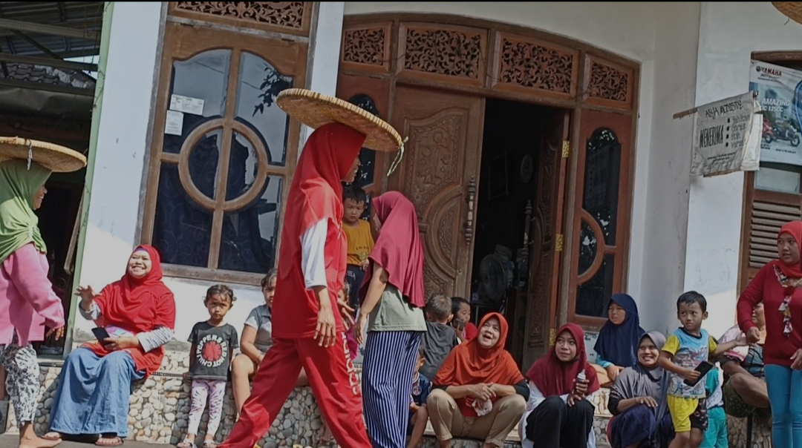
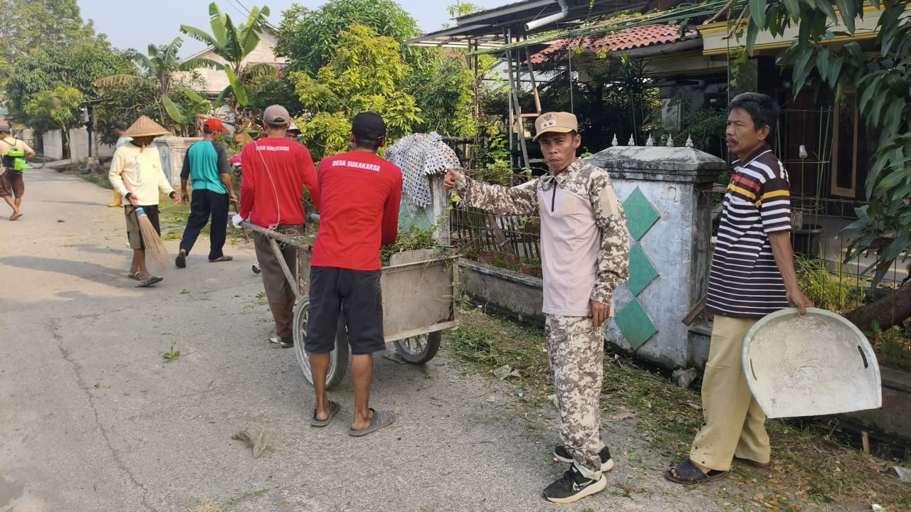
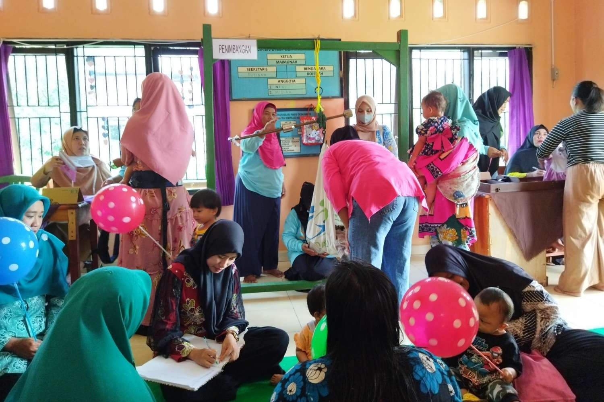
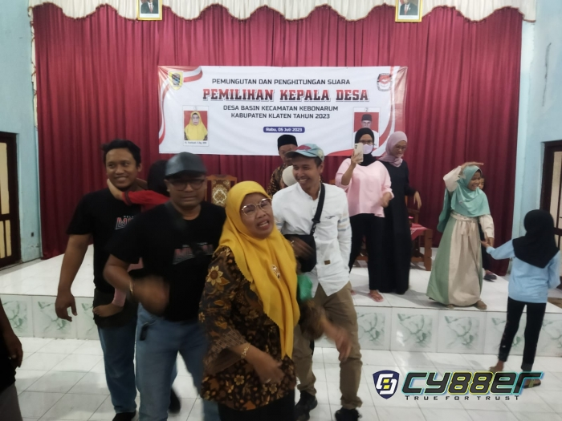
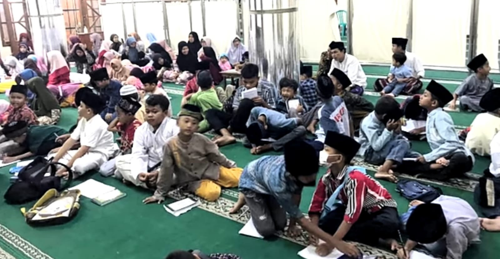
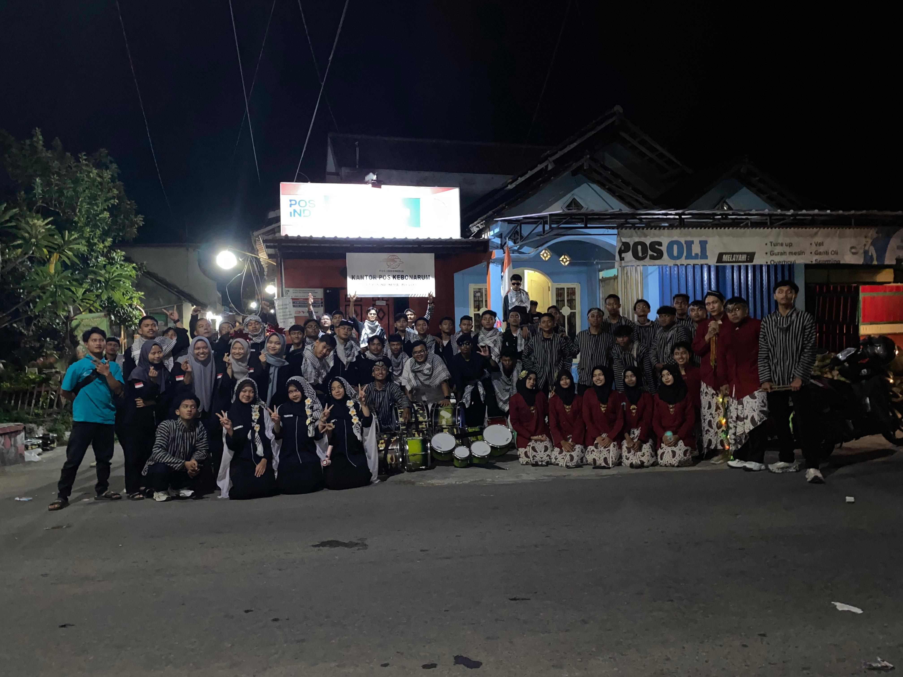

Dokumentasi kegiatan masyarakat dan aktivitas Desa Basin.

Kegiatan lomba 17 Agustus di Desa Basin menjadi acara tahunan yang selalu dinantikan masyarakat. Berbagai perlombaan diadakan untuk anak-anak hingga orang dewasa guna mempererat kebersamaan, menumbuhkan semangat nasionalisme, serta menciptakan suasana meriah dalam memperingati Hari Kemerdekaan Indonesia.

Budaya gotong royong masih sangat dijaga oleh masyarakat Desa Basin. Warga bersama-sama membersihkan lingkungan, memperbaiki fasilitas umum, dan membantu sesama demi menciptakan desa yang bersih, nyaman, dan harmonis.

Kegiatan posyandu rutin dilakukan untuk menjaga kesehatan ibu dan anak di Desa Basin. Melalui posyandu, masyarakat mendapatkan pelayanan kesehatan seperti penimbangan balita, pemeriksaan kesehatan, pemberian vitamin, serta edukasi tentang pentingnya pola hidup sehat.

Pemilihan kepala desa merupakan bentuk demokrasi yang dijalankan masyarakat Desa Basin untuk memilih pemimpin yang amanah dan bertanggung jawab. Kegiatan ini dilaksanakan dengan semangat kebersamaan, kejujuran, dan partisipasi aktif warga demi kemajuan desa.

Kegiatan mengaji bersama dilaksanakan setiap malam Jumat sebagai sarana meningkatkan keimanan dan mempererat silaturahmi antarwarga. Melalui kegiatan ini, masyarakat Desa Basin dapat belajar membaca Al-Qur’an, mendengarkan tausiyah, serta menanamkan nilai-nilai keagamaan dalam kehidupan sehari-hari.

Lomba takbir keliling menjadi tradisi masyarakat Desa Basin dalam menyambut Hari Raya Idulfitri maupun Iduladha. Kegiatan ini diikuti oleh berbagai kelompok warga dengan menampilkan kreativitas kendaraan hias, gema takbir, dan nuansa islami yang meriah sehingga menambah semangat kebersamaan masyarakat desa.